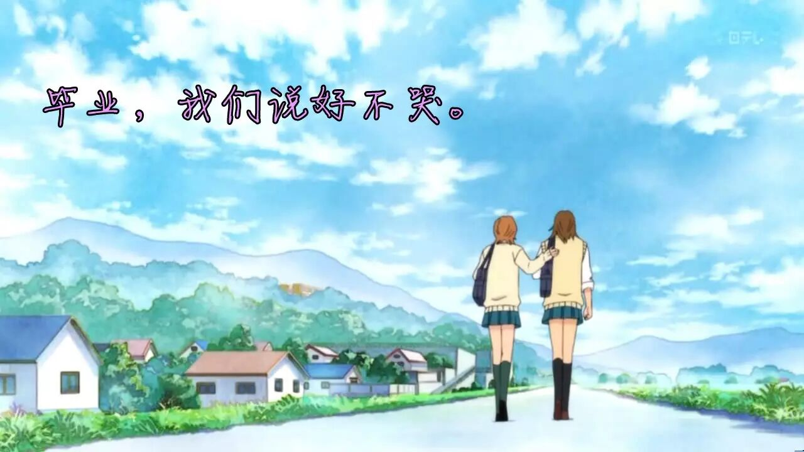
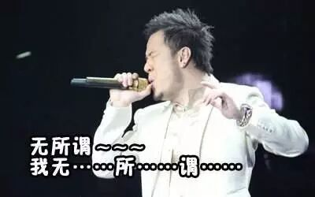

Time: 19:30-21:30, Friday, 23rd Jun
Venue: Room B104, New Main Building, Beihang University
---------------------------------------------------------------------------------------------------------------

即兴演讲部分
毕业
TTM:Tony
TM:Rocky
大一的时候，觉得生活是橙色的。太多新生活扑面而来，新鲜而灿烂，热情而紧张。橙色的记忆里，有第一次见到知名教授的激动，第一次加入社团的好奇，第一次考试的紧张……
大二的时候，生活是绿色的，青春拔节生长，旺盛得像正在生长的树，梦想也一点点接近现实。跟老师讨论问题时，看见他脸上满意的微笑；跟老外对话时，给自己打了个满意的分数；开始熟悉校园里任何一处美食，也常常在BBS上呆到很晚……
大三的时候，生活变成蓝色。我们冷静了下来，明白自己离未来究竟有多远，并要为此做出选择：出国，考研，还是工作。所有与这个决定相关联的一切都可能会变化，包括我们的爱情，那还年轻没经历过风雨的爱情。
大四的生活，像有一层薄薄的灰色。在各种选择里彷徨，每一个人都忙忙碌碌，一切仿佛一首没写完的诗，匆匆开始就要匆匆告别。
但那灰色里，却有记忆闪闪发亮。那些彩色的岁月，凝成水晶，在忙碌的日子里，它们是我们的资本，也是我们的慰藉。
六月，我们和去年学长毕业时一样，把行李装好了箱，一点点往外运，整个宿舍楼就这样在几天之内变回空楼，变成一个无限伤感的符号。记忆也同时从校园离开，收藏进内心的匣子，那是我们的流金岁月，也是我们的宝藏。
未来就像天空中一朵飘忽不定的云彩，而我们，从毕业这一天起，便开始了漫长的追逐云彩的旅程。明天是美好的，路途却可能是崎岖的，但无论如何，我们都有一份弥足珍贵的回忆，一种割舍不掉的友情，一段终身难忘的经历。
-------------------------------------------------------------------------------
备稿演讲部分
无所谓 (CC 10)
演讲者 - 张博文

如果树叶不落，守着一树腐烂的叶子就叫拥有吗?树与叶，很难说谁是谁的，但无所谓，流年划过四季，树与叶都在彼此的生命中走过一程。哪怕像鱼一样，转身就把对方遗忘，那也无妨。
如果车辆停滞不前，绕着路蜿蜒，就叫拥有吗?损人不利己的事，总会有头脑发热的人去干，干了，还是什么也没有。太过执着于得失，太过在意于占有，最终迷失，碌碌终生，一无所有。
我有一次看到漏斗，觉得漏斗的生存方式才应该是我们所选择的：一开始便一无所有，盛满后一点点失去，但曾拥有过，如果有一天再一次一无所有，那又怎样呢?大概那时，便可毫无留恋地说，无所谓，我已走过了。
周五晚上，我们一同见证~~
What is Toastmasters?
Toastmasters International (TI) is a non-profit educational organization that operates clubs worldwide for thepurpose of helping members improve their communication, public speaking, and leadership skills.

https://mp.weixin.qq.com/s/gY-3JfxvATJh0Kvw9vsvHw
本页为抢救式本地归档，图文已永久保存。